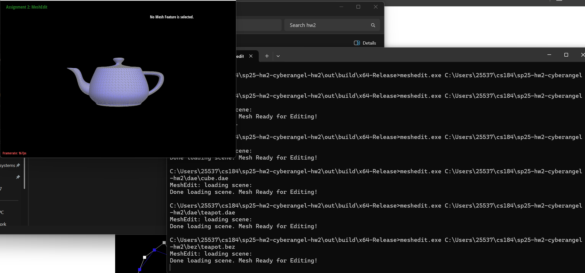

CS184/284A Spring 2025 Homework 2 Write-Up
Names: Jinglun Zhang and Feiyang Liu
Link to webpage: https://cal-cs184-student.github.io/hw-webpages-jordan-victor/
Link to GitHub repository:https://github.com/cal-cs184-student/sp25-hw2-cyberangel-hw2

Overview
In this homework2, we implemented Bezier curves and surfaces, and triangle meshes and half-edge data structure. We implemented Bezier curves with 1D de Casteljau subdivision and Bezier surfaces with separable 1D de Casteljau. We also implemented area-weighted vertex normals, edge flip, edge split, and Loop subdivision for mesh upsampling. We also implemented a creative model for the art competition. It is actually a long work for doing all these mesh operations. We have to implement the half-edge data structure and then implement the operations on the half-edge data structure. We also have to implement the Bezier curves and surfaces. It is a good practice for us to understand the mesh operations and the Bezier curves and surfaces. We also have lots of bugs during these implementations which I will address in detailed questions. It is interesting or somehow exhuasting while debugging.Section I: Bezier Curves and Surfaces
In this section, we will implement Bezier Curves and Surfaces.Part 1: Bezier curves with 1D de Casteljau subdivision
Bezier curves are used for smooth modeling. It is a recursive algorithm to subdivide control points and finally get a smooth curve by their subdivisions. So we can have a "smmoth" curve as we want. In this 1D subdivision, we are just set several control points and get a smooth curve between them. We can also move control points to get a different smooth. It is not actually pretty hard to implement this. We create a recursive function to calculate the new control points(subdivisions) and do it again and again until we only have two subdivisions. And we can have a smooth curve.Here is our 6 control points.
|
|

|

|
|
|
|

|
|
|

|
Part 2: Bezier surfaces with separable 1D de Casteljau
In this part, we transfer 1D Bezier curves to 2D surfaces. A Bezier surface is constructed by many Bezier cureves on it. In lecture, we have two ways to construct the surface. One is using separations of Bezier curves. And the other one is using algebraic formula to complete. I don't know how to implement that math stuff in codes. So we use the first way. We still have control points on the surface. But each points are also like a cross control points of Bezier curves. It is like a grid formed by many Bezier curves. We move these control points to generate our smooth surface. Coding part is actually also a recursive function using 1D Bezier curve we have before. We just try to combine 1D into 2D to generate that patch for the control points.Here is images for the surface.

|

|
Section II: Triangle Meshes and Half-Edge Data Structure
Part 3: Area-weighted vertex normals
For this implementation for vertex normals, we need to calculate the normals for each vertex. First for all, we need all the data that vertex has: its next, its next next(so we have the tri data). We know all the edges around it and we calculate the normal units for it. And we return it. But we might want to check the boundary and !halfedge to make sure we don't get some wired normal units.Here is images.
|
|

|
Part 4: Edge flip
In this part, we can know how to flip the edge. We will use graphs we make to show how to do that instead of using lots of words to.Part 5: Edge split
....Part 6: Loop subdivision for mesh upsampling
....(Optional) Section III: Potential Extra Credit - Art Competition: Model something Creative
....Additional Notes (please remove)
- You can also add code if you'd like as so:
code code code -
If you'd like to add math equations,
- You can write inline equations like so: \( a^2 + b^2 = c^2 \)
- You can write display equations like so: \[ a^2 + b^2 = c^2 \]